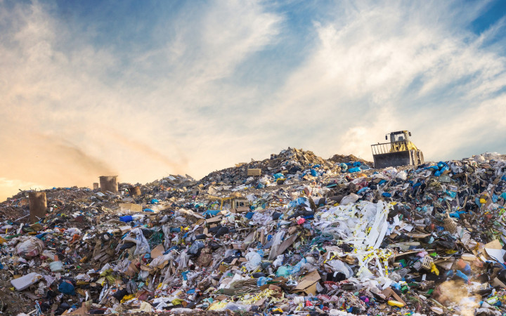
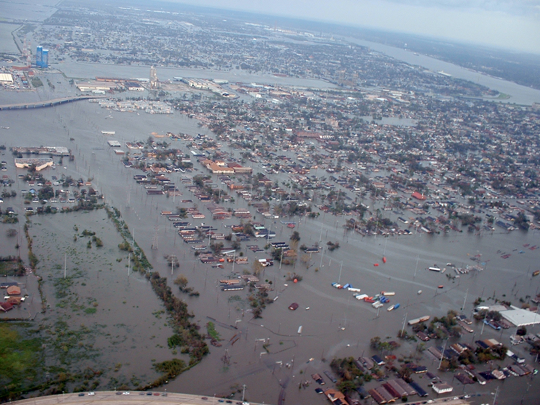

Contact your congressional representative. As much as we can try to change our own lives, the government needs to set up, especially as they can set laws that could put the entire nation on the track towards renewable energy. Email, call, tweet, hell even send a letter to your congressional representative. Work with your friends, family, and local community to show the importance of this issue to your congressional representative and that you want them to act. Remember, they work for you, you don't work for them.
Look at your energy company's source of energy. This is somethign that you can easily find by doing a quick Google search. If you find that your energy comes from nonrenewables, look for ways to reduce your energy consumption. You can make sure to turn off lights if you aren't using them, unplug any unused applicanes. If you are living in your own home, you can even isntall solar panels to reduce your greenhouse gas emissions and nonrenewable energy dependence.
Switching up your transporation method. A large source of greenhouse gas emissions for consumers is cars, which largely used gasoline, a nonrenewable energy source. As the consumer, you must look to change your transporation metho. Look for place in your route where you can walk or bike instead of using your car; look to use your city's public transporation instead of your car. Another potential idea, while more expensive, is to sell yoru gas-guzzler and buy an eletric vechile.
You may know that nonrenewable energy is bad, but why? Why is nonrenewable energy bad? When we burn nonrenewable energy sources (i.e., coal, oil, gas), it emits greenhouse gasses into the air, primarily methane and carbon dioxide. When these gasses are in the atmosphere, they can trap in heat radiating from the Earth's surface and, rather than it go away from the earth, redirect it back to the Earth, resulting in increased surface temperatures. Now, it is important to not that greenhouse gasses are not man-made, methane and carbon dioxide are both natural resoruces that have been in the ecosystem since as long as the Earth. However, by using nonrenewable energy, we are putting greenhouse gasses into the atmosphere faster than nature and take out and replace. As a result, greenhouse gasses build up and the Earth's temperature rises.
This is why we must move away from nonrenewable energy sources and shift towards renewable energy sources (i.e., solar, wind, nuclear). There are energy sources that will have a fast enough regeneration cycle because control needs to be implemented or an indefinite life. Now, we are seeing some transitions. Costa Rica, for example, produces 95% of its energy from renewable sources. Scotland has 98% of its elecritiy needs met from wind power. Uruguay is ~100% powered by renewable energies. However, large countries especially the United States still have a lot more to do if switching to renewable energies is a likely goal in the next few years.

We Need to Go From Linear & Wasteful to Circular and Recycling!
Contact your congressional representative. For quite lierally all of these issues, the biggest and potentially more impactful action that a person can have on this is by trying to persuade their government. It is important as well in this case. The government needs to set laws that determine how companies and the entire nation deal with trash. However, for Congress to understand that we need those laws, their constitutents, the people that they are supposed to represent and help, must show that they value this issue.
Research the companies you buy from. A major way that companies can see that consumers value a company that produces low-waste is through their bottom line and profits. Look for companies that have a circular business model, using recycable and reusable materials. Get your friends, family, and local community on this movement. If enough people are on this, major companies (the biggest producers of waste) will recognize this and reduce their waste.
It is important to note that waste/trash is not the biggest emitter of greenhouse gasses. However, this is still something that we must deal with now. It is also something that we can possibly easily target. A lot of waste comes from the traditional and current linear economy. A linear economy is in which one a company produces a product for consumers, resulting in pollution and GHG emissions. Then, consumers buy that product and, once they are done with it, dispose of it as waste. This has resulted in nealry 2.01 billion tonnes of waste being produced globally. With 45% of waste disposed in lanfills, that means ~904.5 million tonnes of trash are in landfills. This is dangerous because, as trash resides in landfills, it results in the release of methane, a highly effective greenhouse gas. In the US alone, landfills produce almost 109.3 million metic ton of carbon equivalent of methane into the atmosphere. This is why we must switch to a circular economy. Rather than having products being used once and never again, a circular economy would have waste from all part of the production process be recycled and reused, resulting in decreased waste in the environment and greenhouse gas emissions.
This is not an easy feat. It will require heavy work from both the government and the private sector (the literal producer and source of waste). However, it is not only possible but vital we try. We only have a few years until the Earth becomes nearly uninhabitable. We must try everything to make sure that we do not have nothing.

We Need to Make Sure Future Lives Will Be Safe!
In 2015, all countries banded together to sign and raitfy the Paris Climate Agreement, in which they agreed to work together in order to prevent average global surface temperatures from reach 2 degrees Celsius. However, the UN's Intergovernmental Panel on Climate Change just released a report that showed we are miles away from even preventing the surface temperature from rising even to 1.5 degrees Celsius, much less than 2 degrees Celsius. Energy sources and waste are just part of how we can solve climate change but there is a lot more that can be done. At the end, we must remember why we are doing all of this; we have to remember why we are contacting our representatives, why we are looking to company's rigourously, why we are making this website. One of the biggest effects of climate change is increased natural disasters, in terms of both number and severity. There will be more hurricanes, flooding (especially with the polar ice caps melting), droughts, forest fires, and tornados. This puts billions of people are risk, especially those in low-economic status as they won't have the ability to move or attain shelter. On our path towards creating a greener, low-carbon world, we have to remember to never give up, never surrender. If we do, then we put ourselves at risk for certain death.